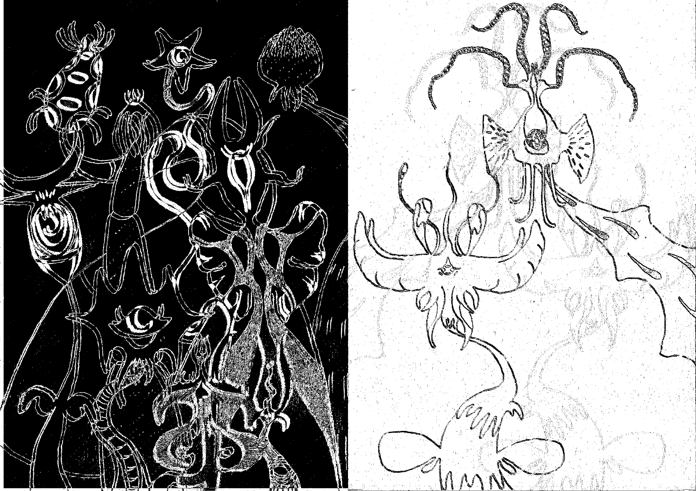
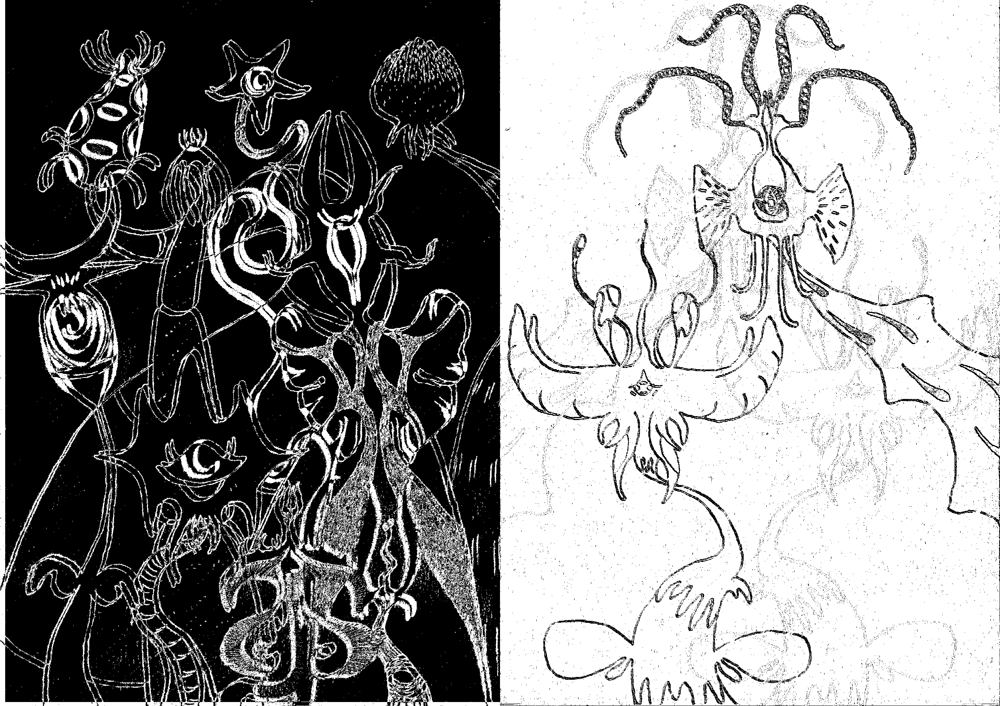

transitory dumping ground
Zola Richardson / Here Somehow / Zeaburd / SkyfishInstagram:
Vimeo:
Github:
This is a temporary spot for me to collate bits and pieces that are too much for my ig profile whilst I don’t get round to making a website.
Navigation
First Draft
At seemingly miscellanous intervals I write poems to process various feelings, experiences or ideas and eventually found that they often exist best as spoken word pieces. There are now many pieces that I plan to record and share simply because it seems they need to be ‘out there’. But I take forever to get round to things, especially when they’re optional (and intimidating). And I also have very little experience performing spoken word as of yet.
For a bit I’d been leaving the link to 'First Draft' up in my ig bio to get over my shyness and perfectionism relative to other people hearing what I wrote, particularly because it was a very low-fi spur-of-the-moment recording. Initially I hoped that the self-consciousness from already having a revised version prepped pretty soon after would incentivise me to put together an improved 'Version Two' rather quickly, but apparently not. Though I do feel less fussed about being heard. For now I’m including it here instead in the interim - with slightly more context - as I anticipate transitioning towards sharing more work.
A Place To Say
As I mentioned in this instagram post, an invite to contribute to the TARIFF Zine led to a spontaneous poem that currently serves as a sort of inadvertent artist's statement (something I've never usually been too keen on). The full text is below along with the images I produced for it.
A Place To Say
(SOMETHING INCREDIBLE
…or Not Much At All?)
And here I had
just a little more time to think
“but still try thinking quickly!”
(I thought)
everything I do takes long and
I never have that much time once I finally
get round to things
But what am I even doing here?
I am so unsure of it
unsure of myself
There are things I'd like to articulate
at some point
but I can’t tell if now is the right time
and I'm scared that the wrong timing
will have the wrong effect
though it might just be that
I don’t actually know what those things are yet
At times I'll like to picture it
as if most of me has been
buried somehow
and I can rise from that
dig back through cold damp mud
find myself small, green, soft and lightly plump
a sprout stretching open slightly, excited
tentative
purposeful
see that in the right circumstances
rot brings fertility
Yet it can also bring the stench of futility
Like seriously, what’s the point
of all this waffling?
is it just pretentiousness?
and likely meaningless to most people
and maybe only mildly resonant
for a brief moment
to those who already have their minds primed
to make use of something like this
primed by factors that
have nothing to do with me
like, if it’s effective it’s nothing of my doing
But I'd still like to do something
and it seems many other people would too
So again and again
I cycle back to wondering
whether there’s ever a way to do
something
that’s worthwhile in most people’s eyes
or if it’s just about choosing a camp (or a choir)
to do your best with
Clearly, I might not find that out for quite a while
Regardless
it’s hard not knowing
what’s right or
where you fit
or
how to ensure value in what you’re doing
So here I am
seemingly ready to
slink back
into settling for that Schrödinger’s solution
everything is unfit and excusable all at once
because ‘subjectivity’
so to speak
No answers, just answering to or for
what of it?
Well
I watched a video once
that included this suggestion
that the bright colours in the 80s
were influenced
by a progression in film photography
and synthetic materials
for example
And then later that the excess
of frills and sequins in all that early 00’s fashion
was a result of the increase in
cheap mass manufacturing methods
Makes sense
and it got me thinking
what is it
about the way our technology is now
that determines our current inclinations?
like, in art as well as fashion
The most obvious development to blame
for what brought about such notable change
would be the internet
I have a lot to say about the internet
but I'll save that for another time
Going by my evaluation so far though
is this the ‘Revisionist Era’?
that’s what I'm keen to call it
with all this endless access to
recordings or representations
of our collective past
Why not look back?
and revisit
and revise
and rehash and regurgitate until any quality
that was actually good
within previous creative outputs
is unquestionably drained for good
Comes down to who gets to ruin it
for everyone else
I suppose
Which means it follows that, allegedly
“everything has been done before”
and now it gets reborn once more
or several times
usually in a kind of
collage of references
Simultaneously we seem to be revelling in
showcasing sentimental splendour
and suffering a sort of sampling sickness
occasionally it works out all right
often it kind of doesn’t
Anyway, another time
a while before watching the video
I attended a lecture
that suddenly depicted many typical ideals
for creative ways of thinking
that I took for granted
(for what creative thinking is)
as a product of relatively recent movements
subvert this, innovate that
demonstrate intellect by
communicating with the conceptual
and incorporating the abstract
etc etc
So after a while of doing the internal whining about how
nothing is ever subverting much of significance
and
no one is ever truly innovating (myself included)
I caught myself in a bind
Because
if those are simply the values
of one particular time
not fundamental truths of existence
then why do they matter that much anyway
and isn’t it, contrarily
convention to attempt to follow them?
but then
wouldn’t an attempt to dismiss those values
be an attempt to subvert them?
So I almost give up
trying to work that part out
But feeling before thinking seems to help
I keep to asking myself what’s resonated so far
not due to any enduring
philosophical rationalisations
or intellectual posturing
(at least not consciously)
but simply because encountering it was
rewarding to me
automatically
or even intuitively?
inevitably for a reason
yet I prefer to explore that afterwards
I guess with all this I'm hoping
to find my place
in some fabled centre point
between every significant influence I've retained
and work out how to implement a depiction of that
as a sort of assimilated whole
developing and demonstrating my own agency
experiencing myself as someone
who can create with similar effects
to what inspires awe in me
But surely creativity is a social act
a celebration
of the complexity in our communication
within us
between ourselves
and with the world
Doesn’t it then do well to exist
in exchange with others?
after all, what we experience socially is usually
the most important aspect of our lives
So there’s that too
to seek out the path to existing in relation to
some form of community
Therefore
the Introverted Investigation proceeds:
Could this creative output of mine be a method
for identifying and depicting
even if sometimes very superficially
my place in the world?
A dull form of divination perhaps
testing the tools of tradition
to weld this messy mass
of material forged from my subconscious
a recycling of jumbled encounters
with what’s already come before myself
bringing forth the previously unknown
transformed and tangible
And here I sow the seeds of something
something that in predecessive forms
worked for several others
A glimmer of a galactic gamble
(socially, as I mentioned)
braving the risk of ridicule, rejection
or disinterest
A hope to uncover and depict
these concurrent fragments of
this universe hidden deep inside myself
as I'd like to imagine it
Then maybe one day
I too can capture grand complexity
through the strength of balanced simplicity
with a nod to my knowledge of nuance
and trial all manner of hesitant experiments
led mostly by my longing
to get more out of this life
and belong
At the moment I call this project
‘Some Other World’
 RETURN

SOWFs
RETURN

SOWFs
Some Other World

As I've worked to re-establish a creative practice over the past few years following a rocky experience of studying art, the core of it has centred on an ongoing collection of drawings I refer to under the project title 'Some Other World'. The act of navigating this creative process itself has remained so prominent that my aims for the project now include incorporating aspects of that contextually. This is the main thing I intend to build towards presenting but is still very much in progress, so for now here's a photo overview of some of my related sketchbooks and such.
Web Work
I'm at the very early stages of learning web design & development. Two examples (besides this page, which is just a Markdown file with custom CSS a static site hosted on GitHub pages) that are up right now are:
Graham Cunnington
A first attempt at using Grav CMS to build a custom site. Gray also provides production studio services, which you can see more about on the site - so check that out if it's of use to you. There'll be more content and features to come in the future too.
Out the Window
This was a simple redesign of an existing draft for the Bristol-based collective Out the Window (connected to the TARIFF zine).